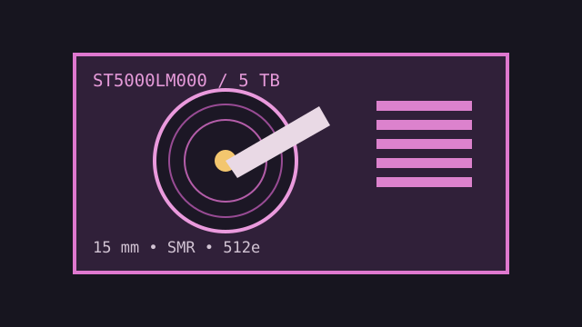

[ IDENTIFIED HDD // MODEL-SPECIFIC RECORD ]
Seagate BarraCuda ST5000LM000
5 TB, 2.5-inch SATA hard drive with a 15 mm z-height. Check enclosure clearance: this is substantially thicker than standard 7 mm and 9.5 mm notebook drives.

IDENTIFICATION: The record is limited to ST5000LM000. Read the label and firmware before using a drive in an enclosure or replacing another model.
Recorded specifications
| Exact model / capacity | ST5000LM000 / 5 TB nominal |
|---|---|
| Form factor / height | 2.5-inch / 15 mm |
| Interface | SATA 6 Gb/s |
| Rotation / cache | 5,400 RPM / 128 MB buffer |
| Sector / recording format | 512e; shingled magnetic recording (SMR). Query the actual sector view and verify workload suitability. |
Compatibility, noise, shock and reliability
- Requires a SATA host/enclosure with 15 mm clearance, suitable bridge firmware and airflow. Most thin notebook bays will not accept its height.
- Seagate rates noise/sound power at approximately 2.4 bel idle / 2.6 bel operating; shock limits are 300 G operating (2 ms) and 650 G non-operating (1 ms). These controlled limits are not a recommendation to bump a running drive.
- SMR drives may slow markedly during sustained writes and behave differently during rebuilds. Check the application's random-write and RAID requirements before deployment.
- The published 600,000-hour MTBF, 600,000 load/unload cycles and error-rate specification are population values, not a promise of unit life. Stop writes if the drive clicks or reports read errors.
Manufacturer documents
- Seagate BarraCuda 2.5-inch Product Manual, Rev. JManufacturer product manual listing ST5000LM000 and its technical, shock and acoustic specifications.
- Seagate BarraCuda 2.5-inch Product Manual, Rev. CEarlier manufacturer product-manual revision for model identification and installation details.
- Seagate BarraCuda 2.5-inch SupportOfficial product support and documentation landing page.